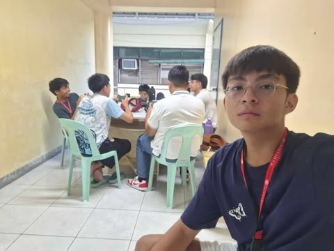
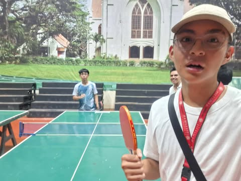
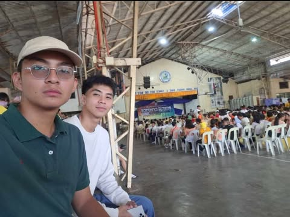
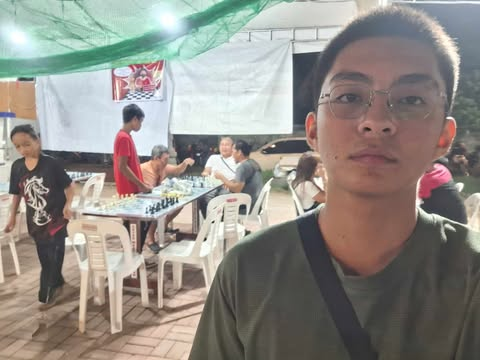
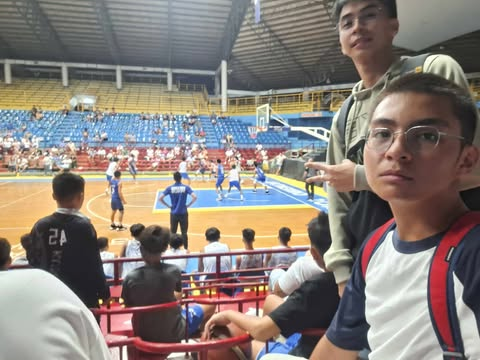
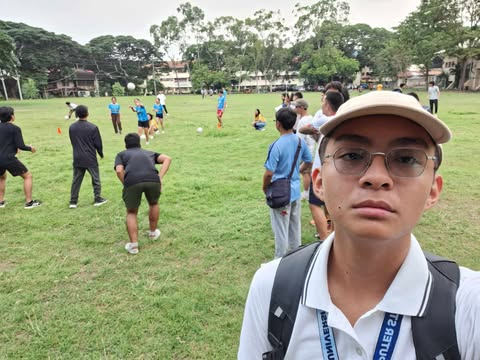
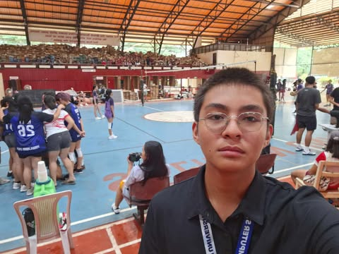

Mobile Legends Esports Leaderboard Tournament
Aug 22, 2024 | 2:00 PM By: Confederates Student Council (2 points)
The Mobile Legends Esport Leaderboard Tournament was established by the Confederates Student Council in celebration of the Hibalag 2024. During my time as a working committee, it was the semi-finals of the tournament. Teams were created even outside our department. I was stationed on the second floor of the Uytengsu Foundation Building. I was in charge of facilitating the players to avoid and prevent potential chaos or disruptions. This was to give the players a safe but enjoyable experience.
The organizers were kind enough to teach me how to facilitate a Mobile Legends Tournament. They were patient in teaching me the ways even though I don’t quite play Mobile Legends on a daily basis. I expected it to be a very busy and chaotic environment, but I was wrong. It was fun to see the players have fun and play the game they love. I was surprised that even the opponents of the team I was supervising already knew each other solely because of the game. The game can truly build connections and that is what surprised me the most.
ESports Tournaments are really a space for good memories and experiences. Creating fun and lasting core memories whether it is with your teammates or your new found friends in the battlefield. While people enjoy the thrill of you and your team competing. I would love to involve myself in these kinds of events where I can witness the crowd and players having a fun and exciting time together. I can really enjoy these types of activities while also learning more from the players' experiences and how the game is played.
Because of this activity, I am thrilled by the competition of the players in this tournament. Whilst also learning from them on how to be better at the game. I am also glad to witness the players creating awesome memories and the crowds cheering louder than what the walls can hold. I am happy to be introduced to this kind of space, because I could really not be the same without video games.

Table Tennis Tryouts
Sept 20, 2024 | 6:00 PM By: Silliman University Table Tennis Varsity Team (1 point)
The table tennis tryouts that were held by Coach Keian Rhyz Encarguez to be eligible to represent Silliman University as a student varsity player. This tryout was located at the front of the SU GYM on September 20, 2024 6:00 PM. My role on the tryout was just a player who wanted to try and test my skills against other aspiring varsity players.
I learned more about the game and how to serve properly at that time since before joining the event my serve was kinda rusty because I was used to lawn tennis. I expected to be obliterated by other good players and that was what exactly happened. There were alot of good players and because of that I was defeated easily and just continued to play with my friends for fun. I was surprised at how amazing and talented the players were. I felt humbled at that time. The encouragement of my friend Gerald Faustorilla cheered me up and because of that we continued to play the rest of the time left. It was difficult but I had fun experiencing playing against talented players.
The experience made me realize my views on the value of competition and sportsman-like behavior. It taught me more things about the game and most importantly was to have fun. I can apply this to my life by simply learning from my mistakes and enjoy the process. I would like to learn and experience more of the game. The benefits of this event was that I was able to experience playing table tennis against skilled individuals and I had fun with my friends right after. If I could have another chance in experiencing something like this, I would be more prepared and ready.
Because of this activity, I have become more humble and nourished my drive to keep practicing and be better at the game to have a chance in competing next time around.

SLS-DB Boscolympics 2024
Sept 26, 2024 | 1:00 PM By: SLS-DB SYM (1 point)
SLS-DB Boscoympics is the annual event for sports where different grade levels compete. It includes E-Sports, Sports, and even parlor games for grades 1 to 3. We attended the event during the last day which was also the awarding ceremony which was on September 26 at 1:00PM. It was held at the SLSDB Gymnasium and got to spectate the awarding of winners for each sport. We were mere spectators looking at games and meeting with our old friends in SLSDB.
We only expected to watch but instead we also had fun. The fresh smell of nostalgia hit us when we were in the exact place only a year ago. Time does go really quick. I was surprised that instead of feeling old, we felt like kids again and hung out with people we knew only a short year back. We also checked out our old advisers and had a quick catch up on the things that were happening at the school and the things happening in our college life. The most positive and satisfying experience I had during the visit was that we never felt like outsiders but as students. The guards still hold up their waves and their giant smiles, Our second parents never forgot us and treated us as friends, and the students never showed any form of unwelcoming especially that only we were using Silliman Id’s and wearing casual clothing while others wore uniforms.
This experience affected my worldview as things are not what you think they seem. Teachers, Students, and Personnel still treat you as family regardless of which school you are now currently attending. As the saying goes “Once a Bosconian, Always a Bosconian”. I learnt that it is okay to catch up with people even though you have never spoken to them in a long time. I would greatly visit again in the next alumni activity. As I would meet my friends, classmates, and old teachers.
Because of this activity, I am a more social person. It taught me that it is okay to reconnect with people and places whom I have never visited or talked to in a long time. It is to build a more healthy relationship and connection with them.

Chess Master Center 6th Weekly Rapid Tournament 2024
Oct 6, 2024 | 6:00 PM By: Chess Master Center (1 point)
This was a weekly tournament located at Rizal Boulevard, It was from 6:00 PM beyond on October 6, 2024. I was only a mere spectator at the event as I felt that I was not good enough to play since most of the players were kids and older people.
I learned a little more strategies watching other people play, it really inspired me and motivated me to start practicing playing chess again. I only expected a competition but I was proven wrong that I showed dedication and passion for the game chess. The most surprising thing at the competition was that evening children no older than 10 years old played in this tournament. It humbled me to see that even kids half my age are way better at chess than me. The people who impacted me the most were the children and the people, they genuinely have the passion and love for the game where they do not care for the prize pool but instead joined the competition to have fun and learn more from other chess players. I loved the experience as it was filled with joy and learning with passion and love for the game. It was satisfying seeing people have fun and laughing despite it being a competitive tournament. The values expressed in this activity is that learning is fun if you have the passion and love for the things you do.
This affected my world view seeing children and adults play in the tournament and they were learning and having fun. This inspired me to practice chess and sparked my interest in playing chess, instead I observed the players to learn a quick tip or two. The next chance I get I would join instead of just spectating in this event. The benefits of this event was spectacular as it gave me motivation and inspiration. I also learned alot from other players on how to play the game chess.
Because of this activity, I am motivated to start learning and playing chess even on my phone. I am also exposed to the environment of the competition as I saw true sportsmanship and love for the game.

1st Gov. Chaco Sagarbarria Cup 2024
Oct 13, 2024 | 6:00 PM By: Gov. Chaco Sagarbarria (1 point)
The finals of the Sagarbarria Cup 2024 for basketball was hosted in Lamberto Macias Sports Complex at 6:00 PM on October 13, 2024. This was 2 teams competing for the champions. This was U13 DB vs DCA. Our role in this event was spectators.
I learned to be like the players that were humble and even though they were tired they never gave up and showed their dedication in the middle of the court. I only expected to have a friendly and exciting game which is what I got in the end. I was surprised at their dedication and drive to win the championships. This impacted my view of the event as they were showing their talents and hard work but in the end it paid off. One player struck out to me the most was number 13. He had an amazing game hitting his shots and properly guarding the ball. Despite that he remained humble and showed respect to his opponents but also supported his teammates any way he could. I liked this event because it showed true dedication, talent, and sportsmanship. It was satisfying that the players never had any fights because a lot of fights do break out during a basketball game. The values being expressed during this game was teamwork, sportsmanship, and dedication.
The event affected my worldview that the game brings us all together and it reinforces the value of teamwork, perseverance, sportsmanship, and dedication. With this learning anyone could use this as a way to achieve your dreams and goals. As exciting as it is to watch a basketball game, It can also teach you values that you can apply to your daily lives. I would still continue to watch and hopefully learn more about this game. Participating in this event can have several benefits like improving sport values and entertainment purposes. If you are a player then it can be used as a physical exercise and a drive to keep pushing yourselves until you reach your goal.
Because of this activity, I am inspired by the players on the team and I wish to follow their mentality on how to play the game by applying good sportsmanship, being humble, and dedicated hardwork and perseverance.

Ding Ibato: Dodgeball for a cause
Nov 13, 2024 | 2:30PM By: DOST sa SU (1 point)
Ding Ibato is a dodgeball tournament organized by DOST sa SU and was held at the Ravello Ballfield on November 13, 2024 at 2:30PM. I attended as a spectator and watched the game together with my friends and friends who joined the game.
I learned how to play dodgeball and learned about the basic rules. I expected a fun and exciting game which not only happened but sparked my interest to try out dodgeball. I was surprised at how long it took for them to win because both teams were equally as skilled. I loved the experience as everyone watching and playing were having fun while also learning a few things about the game.
This changed my worldview because no matter how hard life gets you should never forget to have fun. I learned to enjoy the sport of dodgeball. In the future I would take the opportunity to join dodgeball events because of this knowledge. I would continue to support and acknowledge the sport as it is genuinely fun and exciting. The benefits of this event is that I had fun and also learned more about the game.
Because of this activity, I am a fan of dodgeball. I would like to experience again either as a player or just a spectator because I find this game very intense and exciting. I would continue the support of this game and recommend my friends and family about this game.

Pasiklaban 2024: Women’s Volleyball Semi-Finals
Oct 30, 2024 | 3:00PM By: Silliman University Senior High School Department (1 point)
The Pasiklaban 2024 Women's Volleyball Semi-Finals happened on October 30, 2024, at 3:00 PM at the SU Gymnasium. This was during Senior High’s Pasiklaban event. I wanted to experience a game of volleyball since that is a sport I used to play during my Senior High days.
I learned more about volleyball and basic strategies. It was a fun and intense game and the energy of the gym was unmatched. I rooted on the blue team together with my friend Gerald because we knew a player from the team. I was surprised by the level of dedication the players showed on the court. The experience made me realize the importance of sports. I liked the activity as it was entertaining to watch and a very skillful game.
The volleyball game taught me the importance of teamwork, dedication, and passion. Without any of these values the team we were rooting on would not win. I would continue to support volleyball as a sport because it is fun and exciting to play. This event was beneficial because of the demonstration of teamwork and hard work. They showed that they got what it takes to be a winner.
Because of this activity, I was inspired and opened my eyes to the value of teamwork especially during sports and other parts in life. No man is an island is what they say and I completely agree.